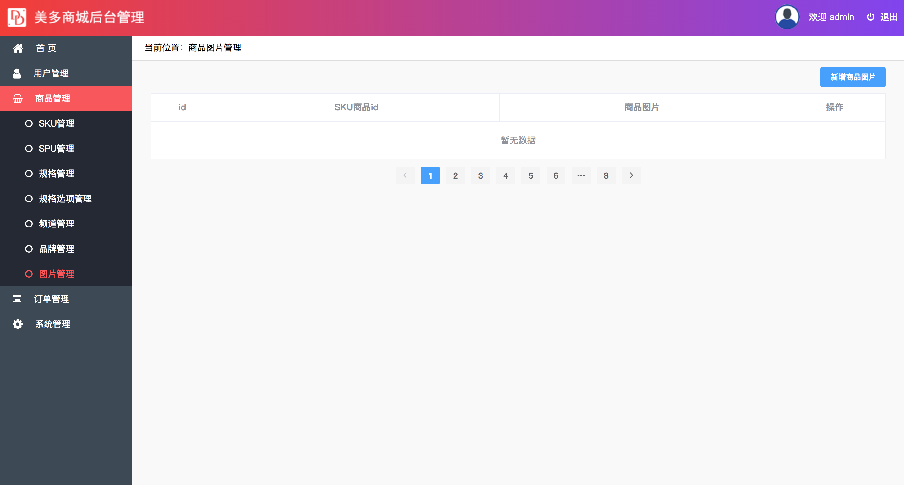

图片表管理
在图片管理中我们来讲解SKU图片的增、删、改、查操作。

知识点概述：
| 知识点 | 说明 |
|---|---|
| 图片数据获取API接口设计与实现 | 理解图片数据获取API接口的设计与实现 |
| SKU简单数据API接口设计与实现 | 理解SKU简单数据API接口设计与实现 |
| FDFS文件的上传与访问 | 常握FDFS文件的上传与访问 |
| Django框架保存文件的过程 | 了解Django框架保存文件的过程 |
| 自定义FDFS文件存储类 | 常握自定义FDFS文件存储类 |
| 图片数据新增API接口设计与实现 | 理解图片数据新增API接口设计与实现 |
| 指定SKU图片数据获取API接口设计与实现 | 理解指定SKU图片数据获取API接口设计与实现 |
| 指定SKU图片数据修改API接口设计与实现 | 理解指定SKU图片数据修改API接口设计与实现 |
| 指定SKU图片数据删除API接口设计与实现 | 理解指定SKU图片数据删除API接口设计与实现 |